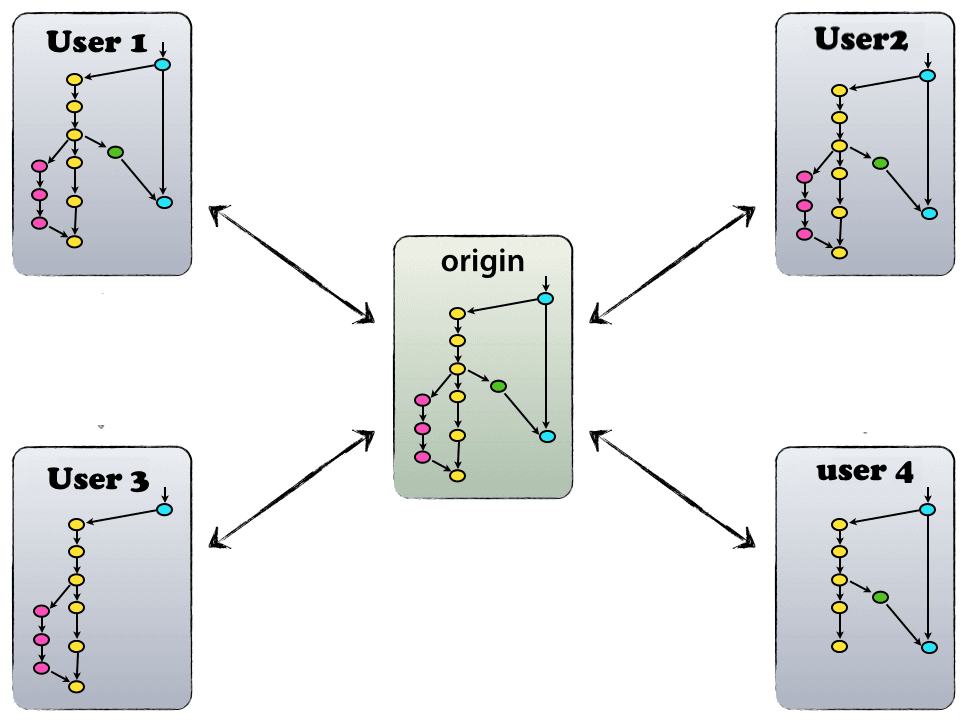

Introducing GitFlow
what is git flow
GitFlow is a branching model for Git, created by Vincent Driessen. it is very well suited to collaboration and scaling the development team.
Key Benefits
Parallel Development
One of the great things about GitFlow is that it makes parallel development very easy,by isolating new development from finished work. New development (such as features and non-emergency bug fixes) is done in feature branches, and is only merged back into main body of code when the developer(s) is happy that the code is ready for release. Although interruptions are a BadThing(tm), if you are asked to switch from one task to another, all you need to do is commit your changes and then create a new feature branch for your new task. When that task is done, just checkout your original feature branch and you can continue where you left off.
Collaboration
Feature branches also make it easier for two or more developers to collaborate on the same feature, because each feature branch is a sandbox where the only changes are the changes necessary to get the new feature working. That makes it very easy to see and follow what each collaborator is doing.
Release Staging Area
As new development is completed, it gets merged back into the develop branch, which is a staging area for all completed features that haven’t yet been released. So when the next release is branched off of develop, it will automatically contain all of the new stuff that has been finished.
Support For Emergency Fixes
GitFlow supports hotfix branches - branches made from a tagged release. You can use these to make an emergency change, safe in the knowledge that the hotfix will only contain your emergency fix. There’s no risk that you’ll accidentally merge in new development at the same time.
Implementation
Decentralized but centralized
The repository setup that we use and that works well with this branching model, is that with a central “truth” repo. Note that this repo is only considered to be the central one (since Git is a DVCS, there is no such thing as a central repo at a technical level). We will refer to this repo as origin, since this name is familiar to all Git users.
Each developer pulls and pushes to origin.

The main branches

The central repo holds two main branches with an infinite lifetime.
- master
- develop
The master branch at origin is the default branch when creating new repository at Git. Parallel to the master branch, another branch exists called develop.
We consider origin/master to be the main branch where the source code of HEAD always reflects a production-ready state.
We consider origin/develop to be the main branch where the source code of HEAD always reflects a state with the latest delivered development changes for the next release.
When the source code in the develop branch reaches a stable point and is ready to be released, all of the changes should be merged back into master somehow and then tagged with a release number.
Therefore, each time when changes are merged back into master, this is a new production release by definition. so that theoretically, we could use a Git hook script to automatically build and roll-out our software to our production servers everytime there was a commit on master.
Supporting branches
Next to the main branches master and develop, our development model uses a variety of supporting branches to aid parallel development between team members, ease tracking of features, prepare for production releases and to assist in quickly fixing live production problems. Unlike the main branches, these branches always have a limited life time, since they will be removed eventually.
The different types of branches we may use are:
- Feature branches
- Release branches
- Hotfix branches
- Bugfix branches
Each of these branches have a specific purpose and are bound to strict rules as to which branches may be their originating branch and which branches must be their merge targets.
By no means are these branches “special” from a technical perspective. The branch types are categorized by how we use them. They are of course plain old Git branches.
Feature Branches

Must branch off from:
develop
Must merge back into:
develop
Branch naming convention:
feature_< nameOfFeature >
Feature branches are used to develop new features for the upcoming or a distant future release.
Feature branch exists as long as the feature is in development, but will eventually be merged back into develop to add the new feature to the upcoming release.
Creating Feature branch
When starting work on a new feature, branch off from the develop branch.
$ git checkout develop
$ git checkout -b feature_newFeature
# Switched to a new branch "feature_newFeature"
Incorporating a finished feature on develop
$ git checkout develop
#Switched to branch 'develop'
$ git merge --no-ff feature_newFeature
#Updating ea1b82a..05e9557
#(Summary of changes)
$ git branch -d feature_newFeature
#Deleted branch myfeature (was 05e9557).
$ git push origin develop
The --no-ff flag causes the merge to always create a new commit object, even if the merge could be performed with a fast-forward. This avoids losing information about the historical existence of a feature branch and groups together all commits that together added the feature.
In the latter case, it is impossible to see from the Git history which of the commit objects together have implemented a feature—you would have to manually read all the log messages.
Release Branches
Must branch off from:
develop
Must merge back into:
develop and master
Branch naming convention:
release_< * >
Release branches support preparation of a new production release.They allow for last-minute dotting of i’s and crossing t’s. Furthermore, they allow for minor bug fixes and preparing meta-data for a release (version number, build dates, etc.). By doing all of this work on a release branch, the develop branch is cleared to receive features for the next big release.
The key moment to branch off a new release branch from develop is when develop (almost) reflects the desired state of the new release. At least all features that are targeted for the release-to-be-built must be merged in to develop at this point in time.
Creating Feature branch
Release branches are created from the develop branch.
$ git checkout -b release_1.2 develop
#Switched to a new branch "release_1.2"
$ ./bump-version.sh 1.2
#Files modified successfully, version bumped to 1.2.
$ git commit -a -m "Bumped version number to 1.2"
#[release-1.2 74d9424] Bumped version number to 1.2
#1 files changed, 1 insertions(+), 1 deletions(-)
After creating a new branch and switching to it, we bump the version number.
Then, the bumped version number is committed.
This new branch may exist there for a while, until the release may be rolled out definitely. During that time, bug fixes may be applied in this branch (rather than on the develop branch). Adding large new features here is strictly prohibited. They must be merged into develop, and therefore, wait for the next big release.
Finishing a release branch
When the state of the release branch is ready to become a real release, some actions need to be carried out. First, the release branch is merged into master (since every commit on master is a new release by definition, remember). Next, that commit on master must be tagged for easy future reference to this historical version. Finally, the changes made on the release branch need to be merged back into develop, so that future releases also contain these bug fixes.
$ git checkout master
#Switched to branch 'master'
$ git merge --no-ff release_1.2
#Merge made by recursive.
#(Summary of changes)
$ git tag -a 1.2
The release is now done, and tagged for future reference.
To keep the changes made in the release branch, we need to merge those back into develop, though.
$ git checkout develop
#Switched to branch 'develop'
$ git merge --no-ff release_1.2
#Merge made by recursive.
#(Summary of changes)
This step may well lead to a merge conflict (probably even, since we have changed the version number). If so, fix it and commit.
Now we are really done and the release branch may be removed, since we don’t need it anymore.
$ git branch -d release_1.2
#Deleted branch release_1.2 (was ff452fe).
Hotfix branches
May branch off from:
master
Must merge back into:
develop and master
Branch naming convention:
hotfix_1.2.1
Hotfix branches are very much like release branches in that they are also meant to prepare for a new production release, albeit unplanned. They arise from the necessity to act immediately upon an undesired state of a live production version. When a critical bug in a production version must be resolved immediately, a hotfix branch may be branched off from the corresponding tag on the master branch that marks the production version.
The essence is that work of team members (on the develop branch) can continue, while another person is preparing a quick production fix.
Creating the hotfix branch
Hotfix branches are created from the master branch. For example, say version 1.2 is the current production release running live and causing troubles due to a severe bug. But changes on develop are yet unstable. We may then branch off a hotfix branch and start fixing the problem:
$ git checkout -b hotfix_1.2.1 master
#Switched to a new branch "hotfix-1.2.1"
$ ./bump-version.sh 1.2.1
#Files modified successfully, version bumped to 1.2.1.
$ git commit -a -m "Bumped version number to 1.2.1"
#[hotfix_1.2.1 41e61bb] Bumped version number to 1.2.1
#1 files changed, 1 insertions(+), 1 deletions(-)
Finishing a hotfix branch
When finished, the bugfix needs to be merged back into master, but also needs to be merged back into develop, in order to safeguard that the bugfix is included in the next release as well. This is completely similar to how release branches are finished.
First, update master and tag the release.
$ git checkout master
#Switched to branch 'master'
$ git merge --no-ff hotfix_1.2.1
#Merge made by recursive.
#(Summary of changes)
$ git tag -a 1.2.1
Next, include the bugfix in develop, too:
$ git checkout develop
#Switched to branch 'master'
$ git merge --no-ff hotfix_1.2.1
#Merge made by recursive.
#(Summary of changes)
Finally, remove the temporary branch:
$ git branch -d hotfix-1.2.1
#Deleted branch hotfix-1.2.1 (was abbe5d6).
Summary

Git Commands
Features
Create a feature branch
git checkout -b feature_MYFEATURE develop
Share a feature branch
$ git checkout feature_MYFEATURE
$ git push origin feature_MYFEATURE
Get latest for a feature branch
$ git checkout feature_MYFEATURE
$ git pull --rebase origin feature_MYFEATURE
Finalize a feature branch
$ git checkout develop
$ git merge --no-ff feature_MYFEATURE
$ git branch -d feature_MYFEATURE
Push the merged feature branch
$ git push origin develop
$ git push origin :feature_MYFEATURE` _(if pushed)_
Releases
Create a release branch
$ git checkout -b release-1.2.0 develop
Share a release branch
$ git checkout release-1.2.0
$ git push origin release-1.2.0
Get latest for a release branch
$ git checkout release-1.2.0
$ git pull --rebase origin release-1.2.0
Finalize a release branch
$ git checkout master
$ git merge --no-ff release-1.2.0
$ git tag -a 1.2.0
$ git checkout develop
$ git merge --no-ff release-1.2.0
$ git branch -d release-1.2.0
Push the merged feature branch
$ git push origin master
$ git push origin develop
$ git push origin --tags
$ git push origin :release-1.2.0 _(if pushed)_
Hotfixes
Create a hotfix branch
$ git checkout -b hotfix_1.2.1 [commit]
Finalize a hotfix branch
$ git checkout master
$ git merge --no-ff hotfix_1.2.1
$ git tag -a 1.2.1
$ git checkout develop
$ git merge --no-ff hotfix_1.2.1
$ git branch -d hotfix_1.2.1
Push the merged hotfix branch
$ git push origin master
$ git push origin develop
$ git push origin --tags
$ git push origin :hotfix_1.2.1 _(if pushed)_